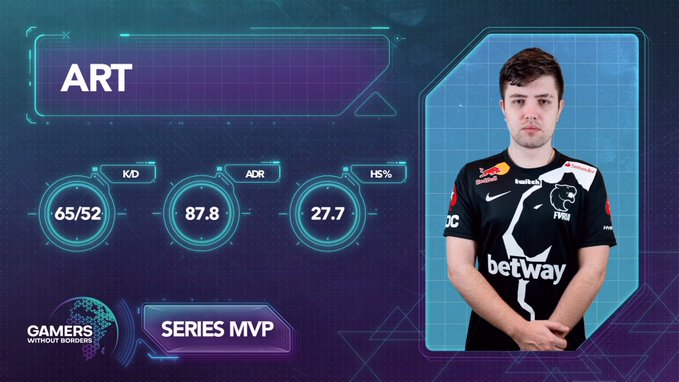

Gamers Without Borders: FURIA vence FaZe e avança de fase |
|||
|  | |||
| A FURIA está classificada para a semifinal do Gamers Without Borders de Counter-Strike: Global Offensive. Pela terceira e última rodada da fase de grupos do torneio, a equipe brasileira bateu a FaZe Clan de virada por 2 mapas a 1 com parciais de 11-16, 16-10 e 16-14. Com o resultado conquistado nesta sexta-feira, os Panteras encaram a ENCE já neste sábado para decidir quem vai para a decisão. Saiba Mais... |
|||